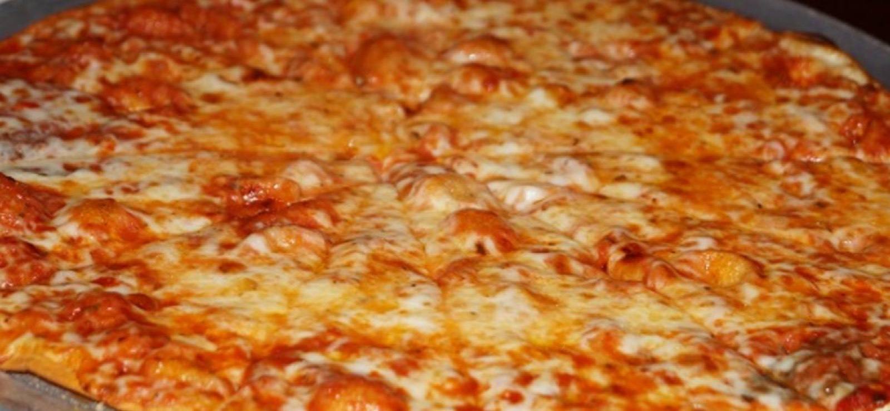
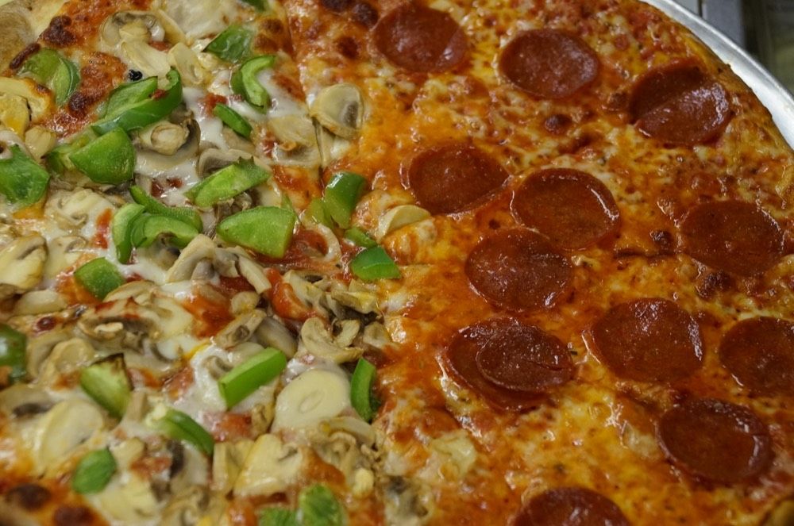
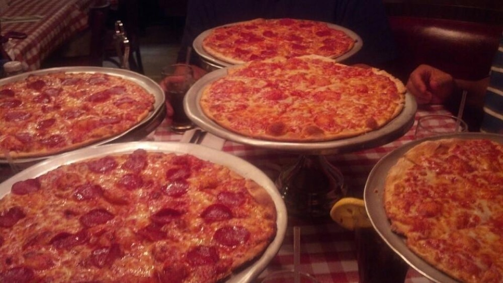
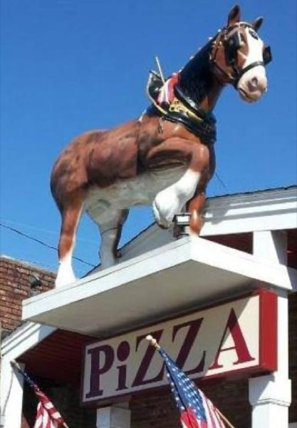
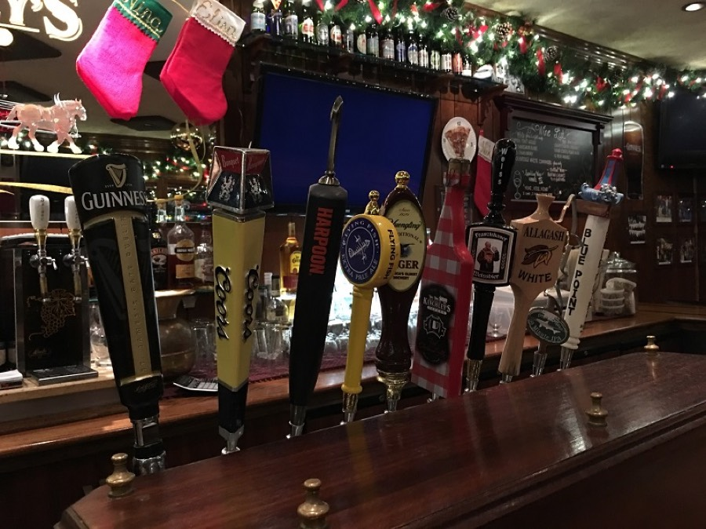
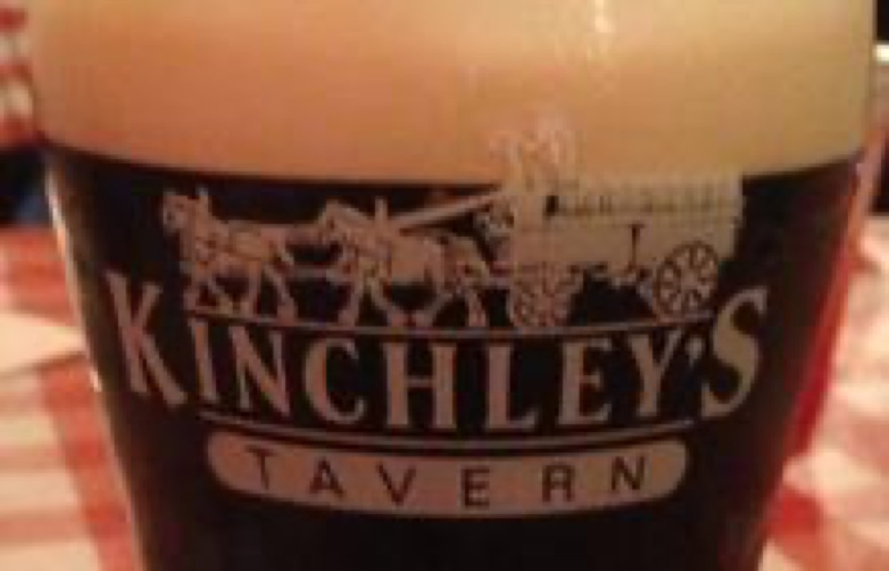
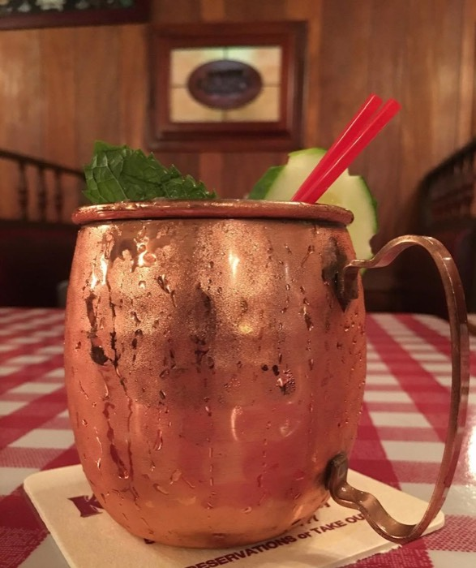

A favorite among locals since 1937. The same Kinchley family recipe, a casual family-friendly dining room, a full menu and a bar with 10 taps – and a night out that won’t bust your budget.
“A Shrine to the Classic Thin Crust Pizza” New Jersey HeraldBest “Bang for the Buck” ZagatVoted “Best of Bergen” (201) Magazine Readers’ Poll#1 Thin Crust Pizza in Bergen County The RecordBest Pizza in Northern New Jersey New Jersey MonthlyBest Pizza of “The Tri-State” WPLJ · WABC · NASH FM Listener Poll“A Shrine to the Classic Thin Crust Pizza” New Jersey HeraldBest “Bang for the Buck” ZagatVoted “Best of Bergen” (201) Magazine Readers’ Poll#1 Thin Crust Pizza in Bergen County The RecordBest Pizza in Northern New Jersey New Jersey MonthlyBest Pizza of “The Tri-State” WPLJ · WABC · NASH FM Listener Poll



The thin crust pizza
This is it. The Bergen County tradition.
New Jersey’s original ultra-thin crust style bar pie, prepared using the same Kinchley family recipe for more than 75 years. Order it original, fra diavolo, with vodka sauce or white.
Just off Route 17 on Franklin Turnpike, on the Mahwah border – easy to reach from all of Bergen and Rockland Counties.
1937
The doors open
Kinchley’s Tavern becomes a local favorite in Ramsey – and has stayed one ever since.
75+
Years, one recipe
The ultra-thin bar pie is still made according to the Kinchley family recipe.
10
Taps on the bar
A rotating selection of seasonal and regional brews, poured by the true 16 oz pint or pitcher.
364
Days a year
Open 7 days a week for lunch, dinner and take-out. Closed only on Christmas Day.

“What horse?”Locals know it. Visitors spot it from Franklin Turnpike: the horse on the roof marks the place.



Our bar
10 taps & a Red Checkered Ale.
Draft beer served by the true 16 oz pint or by the pitcher, wine by the glass, split or bottle, a full selection of premium spirits – and Moscow Mules.
Kinchley’s Red Checkered Ale
Yuengling Lager
Allagash White
Blue Point Toasted Lager
Dogfish Head 60 Min IPA
Guinness Stout
Franziskaner Weissbier
Doc’s Hard Pear Cider
Moscow Mules: Traditional · Klydesdale Kicker · Spring Thyme. Taps rotate; pricing and availability subject to change.
In the press
What they’ve said about the pie.
“I Can’t Think Straight Right Now This PIZZA Is So Freakin’ Good”
Frank Pinnello · Host of VICELAND’s “The Pizza Show”
Cash only. Checks or credit cards not accepted – ATM on premises.
Do I need a reservation?
Reservations are strongly recommended for any size party. Call (201) 934-7777.
Can I order take-out?
Yes – the entire menu is available for take-out. Call the same number to order.
Do you take credit cards?
No. Checks and credit cards are not accepted, but there is an ATM on the premises.
Are you open on holidays?
Kinchley’s is open 7 days a week, 364 days a year – closed only on Christmas Day. Watch for holiday specials like heart-shaped pizza for Valentine’s Day, corned beef & cabbage on St. Patrick’s Day and the Thanksgiving turkey dinner.
Can you ship a pizza?
Ask about shipping pizza to anywhere within the continental U.S.
Is there a kids’ menu?
Yes – “Children Only” plates for 14 and under: pasta with meatball, baked penne, ravioli, Kraft Mac & Cheese, pretzel dog platter or chicken tender platter.
Let Kinchley’s Kater
Let Kinchley’s Kater your next event. Call (201) 934-7777 to ask.
Gift certificates
Gift certificates are available for any occasion – the easy present for a pizza lover.
Kinchley’s merchandise
“What horse?” tees, “I’m a Kinchley’s Kid” shirts, caps, pint glasses and mugs.
Hungry yet?
Reservations recommended for any size party. Full menu available for take-out.